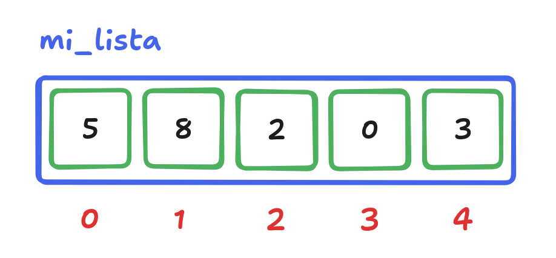

Teoría 502
Listas
0.0.1 ¿Puedes resolver este ejercicio?
- Desarrolla un programa Python que lea una secuencia de números dada por el usuario (terminada en 0) y muestre la suma de los números leídos.
print("Introduce una secuencia de números (termina en 0):")
n = int(input())
suma = 0
while n != 0:
suma += n
n = int(input())
print(f"La suma de los números es: {suma}")- Solo necesitamos almacenar un número
na la vez.
0.0.2 ¿Puedes resolver este ejercicio?
- Desarrolla un programa Python que lea una secuencia de números dada por el usuario (terminada en 0) y a continuación los muestre en orden inverso.
print("Introduce una secuencia de números (termina en 0):")
n = int(input())
while n != 0:
# ???
n = int(input())
# ???0.0.3 ¿Puedes resolver este ejercicio?
- Desarrolla un programa Python que lea una secuencia de números dada por el usuario (terminada en 0) y cuente cuántos números hay por encima de la media.
print("Introduce una secuencia de números (termina en 0):")
n = int(input())
cuenta = 0
while n != 0:
# ¿Cómo calculamos la media sin conocer aún todos los números?
if n > media: # !!!!
cuenta += 1
n = int(input())
print(f"Hay {cuenta} números por encima de la media.")0.1 Limitaciones
- ¿Qué tienen en común los dos últimos programas?
- Requieren almacenar todos los números introducidos por el usuario.
- ¿Cómo podemos hacerlo?
Usando muchas variables.Usando un objeto con muchos atributos.- Usando listas.
1 Listas
1.1 Listas en programación
- En programación, una lista (o array) es una:
- Colección de elementos: Contiene cero, uno o más elementos.
- Ordenada: Los elementos tienen un orden específico.
- Homogénea: Todos los elementos son del mismo tipo.
- Las listas reciben un identificador único (igual que los objetos).
- Sus elementos se identifican mediante su posición (índice) dentro de la lista.
- La siguiente lista:
- Tiene un identificador
mi_lista. - Contiene elementos de tipo entero.
- Tiene un tamaño de
5enteros. - El entero en la posición
1tiene el valor8.
- Tiene un identificador

1.2 Definición de listas en Python
- En Python, las listas se definen como
- la secuencia de valores que la conforman,
- separados por comas
- y envueltos en corchetes
[].
mi_lista = [5, 8, 2, 0, 3] # Lista de 5 enteros
condiciones = [True, False, True, True] # Lista de 4 booleanos
temperaturas = [25.5, 27.3, 26.0, 24.8] # Lista de 4 floats
vacía = [] # Lista vacía1.3 Acceso a los elementos de una lista
- Un elemento de una lista se identifica mediante su posición (índice) dentro de la lista.
- Para acceder a dicho elemento, se utiliza:
- El identificador de la lista,
- el índice del elemento deseado.
- envuelto en corchetes
[].
- La primera posición de una lista es la
0.- NO la
1.
- NO la
8
1.3.1 Ejemplo: Imprime los elementos de una lista y sus posiciones
Elemento 0: 5
Elemento 1: 8
Elemento 2: 2
Elemento 3: 0
Elemento 4: 3
Elemento 1: 8
Elemento 2: 2
Elemento 3: 0
Elemento 4: 3
1.3.2 Ejemplo: Imprime los valores impares de una lista y sus posiciones
mi_lista = [5, 8, 2, 0, 3] # Tamaño 5
for i in range(5):
el = mi_lista[i]
if el % 2 != 0:
print(f"Elemento {i}: {el}")Elemento 0: 5
Elemento 4: 3
Elemento 4: 3
1.3.3 Ejemplo: Imprime en orden inverso los elementos de una lista y sus posiciones
mi_lista = [5, 8, 2, 0, 3] # Tamaño 5
for i in range(4, -1, -1):
print(f"Elemento {i}: {mi_lista[i]}")Elemento 4: 3
Elemento 3: 0
Elemento 2: 2
Elemento 1: 8
Elemento 0: 5
Elemento 3: 0
Elemento 2: 2
Elemento 1: 8
Elemento 0: 5
1.4 Acceso out-of-bounds
- ¿Qué ocurre si intentamos acceder a una posición que no existe?
IndexError: list index out of range
- ¡Cuidado!
- Deberemos asegurarnos de acceder a posiciones dentro del rango.
1.4.1 Ejemplo: Leer una lista de 5 números y pintarla en orden inverso
Introduce 0º número: 4
Introduce 1º número: 3
Introduce 2º número: 7
Introduce 3º número: 9
Introduce 4º número: 4
4
9
7
3
4
Introduce 1º número: 3
Introduce 2º número: 7
Introduce 3º número: 9
Introduce 4º número: 4
4
9
7
3
4
- ¿No existe otra forma de crear una lista de
nelementos?10elementos:[0, 0, 0, 0, 0, 0, 0, 0, 0, 0]- ¿
10_000elementos? - ¿
nelementos, siendonun número introducido por el usuario?
- Podemos inicializar una lista con
nelementos utilizando la multiplicación de listas:- En Python, multiplicar una lista por un número
ncrea una lista conncopias de la lista original.
- En Python, multiplicar una lista por un número
Sí, es un poco raro, pero funciona. Más adelante aprenderemos otras técnicas más elegantes.
1.5 Listas como argumentos de funciones
- Los argumentos de una función pueden ser de cualquier tipo, incluidas las listas.
- Recuerda que uno de los objetivos principales de las funciones es que sean independientes y reutilizables.
- Una función que solo funciona con listas de un tamaño concreto no es muy reutilizable.
- La función
len()devuelve el número de elementos de una lista.
1.5.1 Ejercicio: Leer una lista de teclado
- Desarrolla una función que lea una lista de
nnúmeros enteros introducidos por el usuario y devuelva la lista.
def leer_lista(n):
l = [0] * n
for i in range(n):
print(f"Introduce {i}º número: ", end="")
l[i] = int(input())
return l1.5.2 Ejercicio: Contar los elementos por encima de la media
- Desarrolla una función que reciba una lista de números y devuelva cuántos elementos son mayores que la media.
def contar_por_encima_de_media(l):
# ???
# TEST
contar_por_encima_de_media([4, 3, 7, 0])
# Debería devolver 2def obtener_media(l):
suma = 0
for i in range(len(l)):
suma += l[i]
return suma / len(l)
def contar_por_encima_de_media(l):
media = obtener_media(l)
cuenta = 0
for i in range(len(l)):
if l[i] > m:
cuenta += 1
return cuentaPrograma completo
def leer_lista(n):
l = [0] * n
for i in range(n):
print(f"Introduce {i}º número: ", end="")
l[i] = int(input())
return l
def obtener_media(l):
suma = 0
for i in range(len(l)):
suma += l[i]
return suma / len(l)
def contar_por_encima_de_media(l):
media = obtener_media(l)
cuenta = 0
for i in range(len(l)):
if l[i] > media:
cuenta += 1
return cuenta
# TEST
l = leer_lista(4)
print(contar_por_encima_de_media(l))2 Strings… ¿listas?
- Si tomamos la definición de lista como una colección de elementos ordenada y homogénea…
- ¿Encajan los strings en esta definición?
- Desde que aprendimos el tipo de datos
str, hemos tratado los strings como unidades indivisibles.- Pero en realidad, un string es una secuencia de caracteres.
- En Python no existe el tipo de datos
charcomo en otros lenguajes.- Un carácter es un string de longitud
1.
- Un carácter es un string de longitud